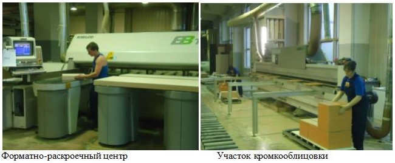

Западная Двина
Экономика
1.Деревообрабатывающий комбинат (градообразующее предприятие)

После войны нужно было наладить производство деревянных строительных деталей для нужд народного хозяйства страны, так как освобождённые от фашистской оккупации районы остро нуждались в жилье. Решающим в выборе места строительства была огромная лесосырьевая база. Строительство завода началось в конце 1943 года. Ещё шла война, поэтому строила молодёжь из окрестных деревень в возрасте 15-18 лет, пленные немцы и русские заключённые. В середине 50-х были построены основные цеха и Жарковский ДОК вошёл в десятку самых крупных предприятий страны. Его продукция – комплекты жилых домов, пиломатериалы, дверные полотна, оконные переплёты, фанера и т.д. – пользовались большим спросом, как на внутреннем, так и на внешнем рынках. Сейчас Жарковский ДОК - это современное, конкурентоспособное предприятие. В месяц здесь выпускается около 9 тысяч изделий. В 90-е годы деревообрабатывающий комбинат едва не стал банкротом. Градообразующее предприятие, одно из лучших в своей отрасли, почти остановилось В 2003 году пришел серьезный инвестор – компания «Феликс», входящая в число крупнейших российских производителей мебели.Новое руководство погасило долги предприятия, вложило огромные средства в его модернизацию. Сегодня продукция комбината – офисная мебель: коллекция «Диалог» отличается демократичной ценой, высоким качеством и имеет свой неповторимый стиль. Коллекция «Система-М» выделяется внушительными размерами и изысканной цветовой палитрой. «Директор» - коллекция, сочетающая представительность, функциональность и комфорт. «Премьер» удачно объединяет в себе классические и современные формы интерьера. Сбытом мебели занимается компания «Феликс», одним из подразделений которой является Жарковский ДОК. Первоклассное итальянское оборудование и квалифицированные кадры, дают прекрасные результаты. Продукция пользуется спросом не только в России, но и за рубежом.
2.Охотничье хозяйство «Экомир»

Одним из направлений развития в охотхозяйстве является вольерное разведение и охота на диких копытных животных - в настоящий момент в сафари-парках хозяйства живут благородные олени и пятнистые олени, грациозные лани, могучие алтайские маралы, кабаны и муфлоны. Животные разводятся как для охоты в собственном сафари-парке, так и для продажи в другие охотничьи хозяйства, частные зоостудии, зоопарки и сафари-парки. В состав комплекса входит небольшая гостиница, вольеры, ферма, механический двор. Строится и модернизируется инфраструктура, а это дополнительные инвестиции в экономику района, которые позволят развивать охотничий и экологический туризм в Тверской области .Предлагаются любые виды охоты, в том числе с луком или арбалетом и загонная охота с собаками, а также бесплатная рыбалка круглый год. Доступны и различные виды досуга — баня, бильярд, катание на снегоходах и квадроциклах, стрельбы по мишеням и тарелочкам, конные прогулки и многое другое. Особая гордость «Экомира» — оздоровительные пантовые бочки, несколько сеансов в которых помогут расслабиться после охоты и набраться сил.
3.ООО «Экосап»


С января 2009г. предприятие «Экосап» добывает реликтовый озерный сапропель озера Жарки и реализует его на рынки Тверской, Московской и других областей. Вначале сапропель передали на исследование в Тверской Государственный Политехнический Университет на кафедру Геологии, переработки торфа и сапропеля, были проведены геологические исследования озера, получена разрешительная документация. Одновременно сапропель озера Жарки был представлен на специализированных сельскохозяйственных выставках, где он получил серебряную медаль XV Международной выставки Цветы-2008 на ВВЦ, дипломы выставок «Золотая осень 2008» и «Дача.Сад.Ландшафт 2009». Исследования показали, что сапропель озера Жарки содержит в себе до 80% органических веществ, из них до 20% гумуса, т.е. плодородного, «родящего» слоя, азот, фосфор, калий, полезные микроэлементы и аминокислоты, а также уникальный компонент - природное серебро. Высокое качество сапропеля, наличие большого объема запасов, устойчивая база позволяет предприятию с уверенностью смотреть в будущее. Появление нового предприятия по добыче сапропеля очень перспективно. В Жарковском районе десятки озер с сапропелем высокого качества, отсутствуют вредные производства, загрязняющие окружающую природную среду. Кроме того, добыча сапропеля не требует высококвалифицированных работников, и весь кадровый состав может состоять из местного населения.